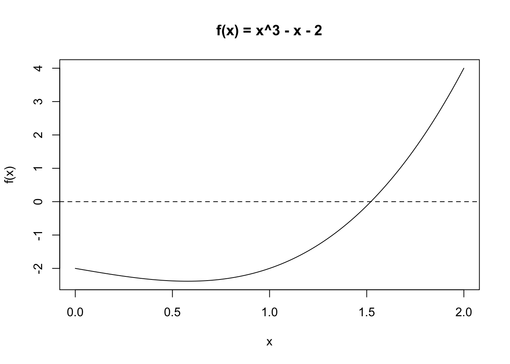
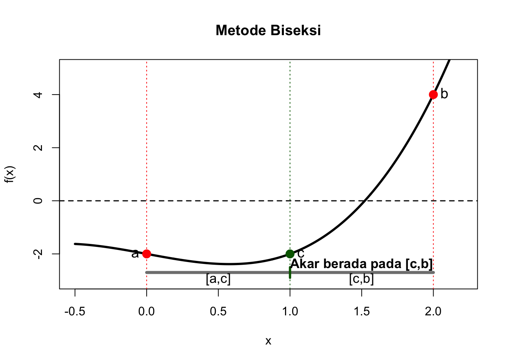
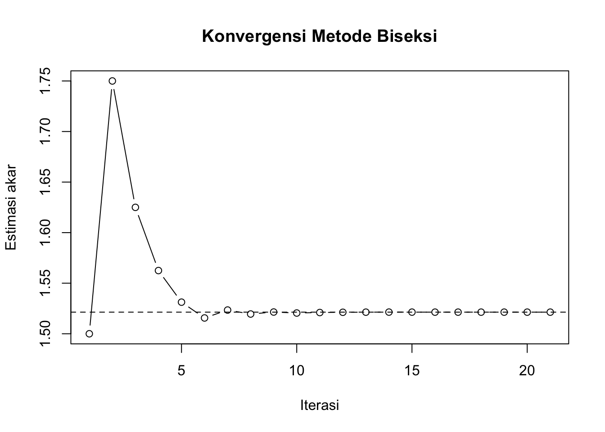
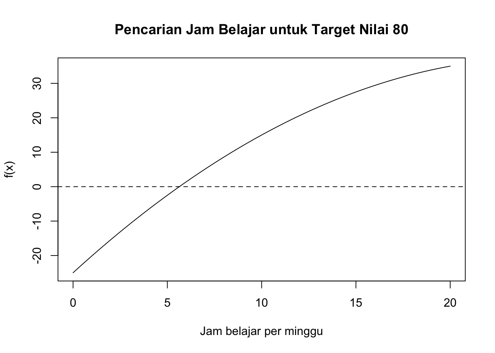
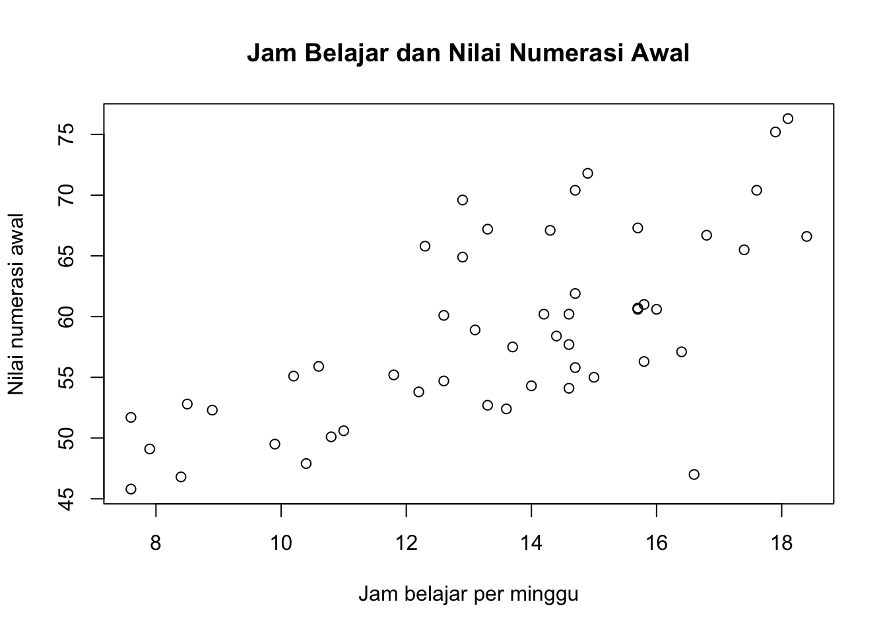

f <- function(x) {
x^3 - x - 2
}
f(1)[1] -2f(2)[1] 4Biseksi dan Newton-Raphson dengan R
Setelah pembelajaran ini, mahasiswa diharapkan mampu:
Kita ingin mencari nilai \(x\) yang memenuhi
\[ f(x)=0. \]
Untuk persamaan nonlinear yang sulit diselesaikan secara analitik, metode numerik memberikan pendekatan untuk memperoleh akar dengan tingkat ketelitian tertentu.
Pada pertemuan ini digunakan dua metode:
Pertimbangkan
\[ f(x)=x^3-x-2. \]
f <- function(x) {
x^3 - x - 2
}
f(1)[1] -2f(2)[1] 4Karena
\[ f(1)=-2,\qquad f(2)=4, \]
maka terjadi perubahan tanda pada interval \([1,2]\). Kita dapat menggunakan Biseksi.
curve(
f(x), from = 0, to = 2,
xlab = "x", ylab = "f(x)",
main = "f(x) = x^3 - x - 2"
)
abline(h = 0, lty = 2)
Akar yang akan kita cari adalah sekitar
\[ x^* \approx 1.52138. \]
Jika
\[ f(a)f(b)<0, \]
maka terdapat setidaknya satu akar pada interval \([a,b]\), dengan asumsi fungsi kontinu.
Titik tengah:
\[ c=\frac{a+b}{2}. \]
Jika \(f(a)f(c)<0\), interval berikutnya adalah \([a,c]\). Jika tidak, interval berikutnya adalah \([c,b]\).

Salah satu kriteria berhenti:
\[ |b-a|<\varepsilon. \]
Kita juga dapat menggunakan
\[ |f(c)|<\varepsilon. \]
biseksi <- function(f, a, b, tol = 1e-6, max_iter = 100) {
if (f(a) * f(b) > 0) {
stop("Tidak ada perubahan tanda pada interval [a,b].")
}
hasil <- data.frame(
iterasi = integer(),
a = numeric(),
b = numeric(),
c = numeric(),
f_c = numeric(),
error = numeric()
)
for (i in 1:max_iter) {
c <- (a + b) / 2
fc <- f(c)
error <- abs(b - a)
hasil <- rbind(
hasil,
data.frame(
iterasi = i,
a = a,
b = b,
c = c,
f_c = fc,
error = error
)
)
if (abs(fc) < tol || error < tol) {
break
}
if (f(a) * fc < 0) {
b <- c
} else {
a <- c
}
}
list(
akar = c,
iterasi = i,
tabel = hasil
)
}Jalankan:
hasil_biseksi <- biseksi(
f = f,
a = 1,
b = 2,
tol = 1e-6
)
hasil_biseksi$akar[1] 1.52138Tabel iterasi:
hasil_biseksi$tabel iterasi a b c f_c error
1 1 1.000000 2.000000 1.500000 -1.250000e-01 1.000000e+00
2 2 1.500000 2.000000 1.750000 1.609375e+00 5.000000e-01
3 3 1.500000 1.750000 1.625000 6.660156e-01 2.500000e-01
4 4 1.500000 1.625000 1.562500 2.521973e-01 1.250000e-01
5 5 1.500000 1.562500 1.531250 5.911255e-02 6.250000e-02
6 6 1.500000 1.531250 1.515625 -3.405380e-02 3.125000e-02
7 7 1.515625 1.531250 1.523438 1.225042e-02 1.562500e-02
8 8 1.515625 1.523438 1.519531 -1.097125e-02 7.812500e-03
9 9 1.519531 1.523438 1.521484 6.221756e-04 3.906250e-03
10 10 1.519531 1.521484 1.520508 -5.178886e-03 1.953125e-03
11 11 1.520508 1.521484 1.520996 -2.279443e-03 9.765625e-04
12 12 1.520996 1.521484 1.521240 -8.289059e-04 4.882812e-04
13 13 1.521240 1.521484 1.521362 -1.034331e-04 2.441406e-04
14 14 1.521362 1.521484 1.521423 2.593543e-04 1.220703e-04
15 15 1.521362 1.521423 1.521393 7.795631e-05 6.103516e-05
16 16 1.521362 1.521393 1.521378 -1.273947e-05 3.051758e-05
17 17 1.521378 1.521393 1.521385 3.260816e-05 1.525879e-05
18 18 1.521378 1.521385 1.521381 9.934278e-06 7.629395e-06
19 19 1.521378 1.521381 1.521379 -1.402611e-06 3.814697e-06
20 20 1.521379 1.521381 1.521380 4.265829e-06 1.907349e-06
21 21 1.521379 1.521380 1.521380 1.431608e-06 9.536743e-07hasil <- hasil_biseksi$tabel
plot(
hasil$iterasi,
hasil$c,
type = "b",
xlab = "Iterasi",
ylab = "Estimasi akar",
main = "Konvergensi Metode Biseksi"
)
abline(h = hasil_biseksi$akar, lty = 2)
Newton-Raphson menggunakan rumus
\[ x_{n+1} = x_n-\frac{f(x_n)}{f'(x_n)}. \]
Untuk
\[ f(x)=x^3-x-2, \]
diperoleh
\[ f'(x)=3x^2-1. \]
Newton-Raphson memerlukan tebakan awal \(x_0\).
f_prime <- function(x) {
3*x^2 - 1
}
newton_raphson <- function(f, f_prime, x0,
tol = 1e-6,
max_iter = 100) {
hasil <- data.frame(
iterasi = integer(),
x = numeric(),
f_x = numeric(),
error = numeric()
)
x <- x0
for (i in 1:max_iter) {
fx <- f(x)
dfx <- f_prime(x)
if (abs(dfx) < 1e-12) {
stop("Turunan terlalu dekat dengan nol.")
}
x_new <- x - fx / dfx
error <- abs(x_new - x)
hasil <- rbind(
hasil,
data.frame(
iterasi = i,
x = x_new,
f_x = f(x_new),
error = error
)
)
if (error < tol) {
x <- x_new
break
}
x <- x_new
}
list(
akar = x,
iterasi = i,
tabel = hasil
)
}Gunakan \(x_0=1.5\):
hasil_newton <- newton_raphson(
f = f,
f_prime = f_prime,
x0 = 1.5,
tol = 1e-6
)
hasil_newton$akar[1] 1.52138Tabel iterasi:
hasil_newton$tabel iterasi x f_x error
1 1 1.521739 2.136928e-03 2.173913e-02
2 2 1.521380 5.893874e-07 3.593245e-04
3 3 1.521380 4.529710e-14 9.916021e-08perbandingan <- data.frame(
metode = c("Biseksi", "Newton-Raphson"),
iterasi = c(
hasil_biseksi$iterasi,
hasil_newton$iterasi
),
akar = c(
hasil_biseksi$akar,
hasil_newton$akar
)
)
perbandingan metode iterasi akar
1 Biseksi 21 1.52138
2 Newton-Raphson 3 1.52138Pertanyaan diskusi:
Coba beberapa tebakan awal.
for (x0 in c(0.5, 1, 1.5, 2, 3)) {
hasil <- newton_raphson(
f = f,
f_prime = f_prime,
x0 = x0
)
cat(
"x0 =", x0,
"| akar =", hasil$akar,
"| iterasi =", hasil$iterasi,
"\n"
)
}x0 = 0.5 | akar = 1.52138 | iterasi = 38
x0 = 1 | akar = 1.52138 | iterasi = 6
x0 = 1.5 | akar = 1.52138 | iterasi = 3
x0 = 2 | akar = 1.52138 | iterasi = 5
x0 = 3 | akar = 1.52138 | iterasi = 6 Diskusikan pengaruh nilai \(x_0\) terhadap konvergensi.
Sekarang kita gunakan konteks EduNumData.
Misalkan suatu model sederhana menggambarkan hubungan jam belajar per minggu \(x\) dengan nilai matematika:
\[ \hat y=55+5x-0.1x^2. \]
Sekolah ingin mengetahui:
Berapa jam belajar yang diperlukan agar prediksi nilai mencapai 80?
Kita mempunyai
\[ 55+5x-0.1x^2=80. \]
Ubah menjadi
\[ f(x)=55+5x-0.1x^2-80=0. \]
f_belajar <- function(x) {
55 + 5*x - 0.1*x^2 - 80
}
curve(
f_belajar(x),
from = 0,
to = 20,
xlab = "Jam belajar per minggu",
ylab = "f(x)",
main = "Pencarian Jam Belajar untuk Target Nilai 80"
)
abline(h = 0, lty = 2)
Periksa interval:
f_belajar(0)[1] -25f_belajar(20)[1] 35hasil_belajar_biseksi <- biseksi(
f = f_belajar,
a = 0,
b = 20,
tol = 1e-6
)
hasil_belajar_biseksi$akar[1] 5.635083Turunannya:
\[ f'(x)=5-0.2x. \]
f_belajar_prime <- function(x) {
5 - 0.2*x
}
hasil_belajar_newton <- newton_raphson(
f = f_belajar,
f_prime = f_belajar_prime,
x0 = 5,
tol = 1e-6
)
hasil_belajar_newton$akar[1] 5.635083Hasil numerik memberikan nilai \(x\) yang memenuhi model dan menghasilkan prediksi nilai 80.
Namun, mahasiswa perlu membedakan:
hasil model bukan otomatis rekomendasi kausal.
Pencarian akar hanya menjawab pertanyaan matematis berdasarkan fungsi yang diberikan. Kita belum dapat menyimpulkan bahwa menambah jam belajar pasti menyebabkan peningkatan nilai sebesar tertentu.
Jika file EduNumData_v1.xlsx tersedia di folder kerja, data siswa dapat dibaca menggunakan readxl.
# install.packages("readxl") # jalankan sekali jika belum terpasang
library(readxl)
student <- read_excel(
"data/EduNumData_lite.xlsx",
sheet = "student"
)
head(student)# A tibble: 6 × 12
student_id school_id teacher_id gender grade attendance study_hours ai_usage
<dbl> <dbl> <dbl> <chr> <dbl> <dbl> <dbl> <dbl>
1 1 1 1 M 10 92.2 11 1.8
2 2 1 1 M 10 77 13.3 5.9
3 3 1 1 F 11 94.3 8.9 6.7
4 4 1 2 M 11 72.9 14.7 6.5
5 5 1 2 F 10 86.6 12.3 6.1
6 6 1 2 F 10 95.7 15.8 5.3
# ℹ 4 more variables: ai_literacy <dbl>, motivation <dbl>, self_efficacy <dbl>,
# numeracy_pretest <dbl>summary(student) student_id school_id teacher_id gender grade
Min. : 1.00 Min. :1 Min. : 1.00 Length:50 Min. :10.00
1st Qu.:13.25 1st Qu.:2 1st Qu.: 5.00 Class :character 1st Qu.:10.00
Median :25.50 Median :3 Median : 9.00 Mode :character Median :10.00
Mean :25.50 Mean :3 Mean : 8.84 Mean :10.44
3rd Qu.:37.75 3rd Qu.:4 3rd Qu.:13.00 3rd Qu.:11.00
Max. :50.00 Max. :5 Max. :17.00 Max. :11.00
attendance study_hours ai_usage ai_literacy
Min. :70.70 Min. : 7.60 Min. :1.800 Min. :35.70
1st Qu.:77.60 1st Qu.:11.90 1st Qu.:3.500 1st Qu.:47.83
Median :85.85 Median :14.10 Median :5.350 Median :66.70
Mean :85.05 Mean :13.49 Mean :5.100 Mean :65.12
3rd Qu.:92.15 3rd Qu.:15.70 3rd Qu.:6.575 3rd Qu.:82.05
Max. :98.20 Max. :18.40 Max. :8.600 Max. :94.10
motivation self_efficacy numeracy_pretest
Min. :50.30 Min. :47.40 Min. :45.80
1st Qu.:66.65 1st Qu.:61.45 1st Qu.:53.05
Median :77.80 Median :73.45 Median :57.60
Mean :75.76 Mean :72.30 Mean :58.77
3rd Qu.:87.80 3rd Qu.:83.38 3rd Qu.:65.35
Max. :94.50 Max. :94.00 Max. :76.30 Eksplorasi awal:
plot(
student$study_hours,
student$numeracy_pretest,
xlab = "Jam belajar per minggu",
ylab = "Nilai numerasi awal",
main = "Jam Belajar dan Nilai Numerasi Awal"
)
Pada tahap ini, fokus mahasiswa tetap pada algoritma pencarian akar. Data pendidikan digunakan sebagai konteks, sedangkan pembentukan model regresi akan dibahas pada materi berikutnya.
Gunakan
\[ f(x)=x^3-4x-9. \]
Untuk fungsi yang sama,
\[ f(x)=x^3-4x-9, \]
gunakan
\[ f'(x)=3x^2-4. \]
Buat tabel:
| Metode | Akar | Iterasi | Galat |
|---|---|---|---|
| Biseksi | |||
| Newton-Raphson |
Tuliskan kesimpulan mengenai kelebihan dan kekurangan kedua metode.
Misalkan sekolah menggunakan model
\[ \hat y=60+4x-0.05x^2, \]
dengan \(x\) = jam belajar per minggu.
Target nilai adalah 85.
Mahasiswa diminta:
Jawab secara singkat:
Metode pencarian akar digunakan untuk mencari nilai \(x\) yang memenuhi
\[ f(x)=0. \]
Biseksi menggunakan interval yang mengapit akar:
\[ c=\frac{a+b}{2}. \]
Newton-Raphson menggunakan:
\[ x_{n+1} = x_n-\frac{f(x_n)}{f'(x_n)}. \]
Biseksi relatif robust tetapi biasanya lebih lambat. Newton-Raphson biasanya lebih cepat ketika kondisi awal baik, tetapi lebih sensitif terhadap tebakan awal dan memerlukan turunan.
Pada masalah pendidikan, metode tersebut dapat digunakan setelah suatu masalah dirumuskan dalam bentuk persamaan nonlinear.
Gunakan salah satu variabel pada EduNumData v1 untuk membuat masalah pencarian akar.
Laporan minimal memuat:
Ketentuan: mahasiswa wajib menggunakan fungsi biseksi() dan newton_raphson() yang dibuat sendiri. Jangan hanya menggunakan uniroot() atau fungsi pencarian akar bawaan lainnya.
Metode Regula Falsi (False Position) juga menggunakan interval \([a,b]\) yang mengapit akar, dengan syarat:
\(f(a)f(b)<0\).
Berbeda dengan metode Biseksi yang menggunakan titik tengah sebagai estimasi akar, metode Regula Falsi menggunakan titik potong garis secan dengan sumbu-\(x\).
Titik estimasi akar dihitung dengan:
\[ c = \frac{a f(b)-b f(a)}{f(b)-f(a)}. \]
Secara geometris, kita membuat garis yang menghubungkan titik \((a,f(a))\) dan \((b,f(b))\).
Titik ketika garis tersebut memotong sumbu-\(x\) digunakan sebagai estimasi akar.
regula_falsi <- function(f, a, b,
tol = 1e-6,
max_iter = 100) {
if (f(a) * f(b) > 0) {
stop("Tidak ada perubahan tanda pada interval [a,b].")
}
hasil <- data.frame(
iterasi = integer(),
a = numeric(),
b = numeric(),
c = numeric(),
f_c = numeric(),
error = numeric()
)
c_old <- NA
for (i in 1:max_iter) {
fa <- f(a)
fb <- f(b)
c <- (a * fb - b * fa) / (fb - fa)
fc <- f(c)
if (is.na(c_old)) {
error <- NA
} else {
error <- abs(c - c_old)
}
hasil <- rbind(
hasil,
data.frame(
iterasi = i,
a = a,
b = b,
c = c,
f_c = fc,
error = error
)
)
if (abs(fc) < tol ||
(!is.na(error) && error < tol)) {
break
}
if (fa * fc < 0) {
b <- c
} else {
a <- c
}
c_old <- c
}
list(
akar = c,
iterasi = i,
tabel = hasil
)
}Metode Fixed Point Iteration merupakan salah satu metode iteratif untuk mencari akar persamaan
\[ f(x)=0. \]
Ide utama metode ini adalah mengubah persamaan tersebut ke dalam bentuk
\[ x=g(x). \]
Jika suatu nilai \(x^*\) memenuhi
\[ x^*=g(x^*), \]
maka \(x^*\) disebut sebagai fixed point dari fungsi \(g(x)\).
Dengan demikian, mencari akar persamaan \(f(x)=0\) dapat dilakukan dengan mencari fixed point dari fungsi \(g(x)\).
Proses iterasinya diberikan oleh
\[ \boxed{x_{n+1}=g(x_n)} \]
Artinya, nilai hasil dari iterasi sebelumnya digunakan sebagai input untuk memperoleh nilai pada iterasi berikutnya.
Secara sederhana:
\[ x_0 \rightarrow g(x_0)=x_1 \rightarrow g(x_1)=x_2 \rightarrow g(x_2)=x_3 \rightarrow \cdots \]
Jika proses tersebut konvergen, maka
\[ x_n\rightarrow x^* \]
dengan
\[ x^*=g(x^*). \]
Istilah fixed point berasal dari kondisi
\[ g(x^*)=x^*. \]
Nilai \(x^*\) tidak berubah setelah fungsi \(g\) diterapkan.
Secara geometris, kita dapat menggambarkan dua fungsi:
\[ y=g(x) \]
dan
\[ y=x. \]
Fixed point merupakan titik perpotongan antara kedua kurva tersebut.
Dengan kata lain,
\[ g(x^*)=x^* \]
terjadi ketika
\[ y=g(x) \]
berpotongan dengan
\[ y=x. \]
Langkah pertama dalam metode fixed point adalah menyusun kembali persamaan
\[ f(x)=0 \]
menjadi
\[ x=g(x). \]
Sebagai contoh, misalkan diberikan
\[ f(x)=x^2+x-2. \]
Kita ingin mencari akar dari
\[ x^2+x-2=0. \]
Persamaan tersebut dapat ditulis sebagai
\[ x^2=2-x. \]
Kemudian diperoleh
\[ x=\sqrt{2-x}. \]
Dengan demikian, kita dapat mendefinisikan
\[ \boxed{g(x)=\sqrt{2-x}}. \]
Proses iterasinya adalah
\[ \boxed{x_{n+1}=\sqrt{2-x_n}}. \]
Pertimbangkan persamaan
\[ x^2+x-2=0. \]
Persamaan tersebut mempunyai dua akar:
\[ x=1 \]
dan
\[ x=-2. \]
Kita akan mencari akar positif \(x=1\) menggunakan metode fixed point dengan \(x^2 = 2-x\) sehingga \(x = \sqrt{2-x}\)
\[ g(x)=\sqrt{2-x}. \]
Misalkan digunakan tebakan awal
\[ x_0=0. \]
Iterasi pertama:
\[ x_1=\sqrt{2-x_0} \]
\[ =\sqrt{2-0} \]
\[ =1.4142. \]
Iterasi kedua:
\[ x_2=\sqrt{2-x_1} \]
\[ =\sqrt{2-1.4142} \]
\[ \approx0.7654. \]
Iterasi ketiga:
\[ x_3=\sqrt{2-0.7654} \approx1.1111. \]
Iterasi selanjutnya memberikan:
| Iterasi | \(x_n\) | \(|x_n-x_{n-1}|\) |
|---|---|---|
| 0 | 0.0000 | – |
| 1 | 1.4142 | 1.4142 |
| 2 | 0.7654 | 0.6488 |
| 3 | 1.1111 | 0.3457 |
| 4 | 0.9428 | 0.1683 |
| 5 | 1.0291 | 0.0863 |
| 6 | 0.9854 | 0.0437 |
| 7 | 1.0073 | 0.0219 |
| 8 | 0.9963 | 0.0110 |
| 9 | 1.0018 | 0.0055 |
| 10 | 0.9991 | 0.0027 |
Terlihat bahwa nilai \(x_n\) bergerak semakin dekat ke
\[ \boxed{x^*=1}. \]
Jadi,
\[ \lim_{n\rightarrow\infty}x_n=1. \]
Tidak semua bentuk \(x=g(x)\) akan menghasilkan proses yang konvergen.
Salah satu syarat penting untuk konvergensi adalah
\[ \boxed{|g'(x)|<1} \]
di sekitar fixed point.
Secara lebih umum, jika pada suatu interval \(I\) berlaku
\[ g(x)\in I \]
dan
\[ |g'(x)|\leq k<1, \]
maka iterasi fixed point akan konvergen ke fixed point di dalam interval tersebut.
Intuisinya adalah bahwa fungsi \(g(x)\) harus cukup “landai”. Jika kemiringannya terlalu besar, kesalahan dari satu iterasi ke iterasi berikutnya dapat semakin besar.
Misalkan \(x^*\) adalah solusi sebenarnya dan
\[ e_n=x_n-x^* \]
adalah error pada iterasi ke-\(n\).
Karena
\[ x_{n+1}=g(x_n) \]
dan
\[ x^*=g(x^*), \]
maka
\[ e_{n+1} = g(x_n)-g(x^*). \]
Dengan pendekatan Taylor,
\[ e_{n+1} \approx g'(x^*)e_n. \]
Dengan demikian,
\[ \boxed{e_{n+1}\approx g'(x^*)e_n}. \]
Jika
\[ |g'(x^*)|<1, \]
maka secara umum error semakin kecil.
Sebagai contoh, jika
\[ g'(x^*)=0.2, \]
maka kira-kira
\[ e_{n+1}\approx0.2e_n. \]
Artinya, error berikutnya hanya sekitar 20% dari error sebelumnya.
Sebaliknya, jika
\[ |g'(x^*)|>1, \]
error cenderung membesar sehingga iterasi dapat divergen.
Persamaan yang sama dapat diubah menjadi beberapa bentuk fixed point.
Untuk persamaan
\[ x^2+x-2=0, \]
kita dapat menulis
\[ x=\sqrt{2-x} \]
atau
\[ x(x+1)=2, \]
sehingga
\[ x=\frac{2}{x+1}. \]
Jadi terdapat dua kemungkinan fungsi:
\[ g_1(x)=\sqrt{2-x} \]
dan
\[ g_2(x)=\frac{2}{x+1}. \]
Keduanya secara aljabar menghasilkan persamaan yang sama, tetapi karakteristik iterasinya dapat berbeda.
Hal ini menunjukkan bahwa dalam metode fixed point:
Pemilihan bentuk \(g(x)\) sangat penting karena menentukan apakah iterasi akan konvergen atau divergen.
Dalam komputer, iterasi tidak dilakukan sampai
\[ x_{n+1}=x_n \]
secara persis.
Sebagai gantinya, digunakan toleransi tertentu, misalnya
\[ \varepsilon=10^{-6}. \]
Salah satu kriteria berhenti yang umum adalah
\[ \boxed{|x_{n+1}-x_n|<\varepsilon}. \]
Kriteria ini memeriksa apakah perubahan nilai \(x\) sudah cukup kecil.
Kita juga dapat menggunakan residual:
\[ \boxed{|f(x_n)|<\varepsilon}. \]
Kedua kriteria tersebut memiliki interpretasi berbeda:
Dalam implementasi numerik, kedua kriteria dapat digunakan secara bersamaan.
Secara umum, algoritma metode fixed point adalah sebagai berikut.
Input:
Langkah:
Tentukan tebakan awal \(x_0\).
Hitung
\[ x_{n+1}=g(x_n). \]
Hitung error
\[ e_n=|x_{n+1}-x_n|. \]
Jika
\[ e_n<\varepsilon, \]
maka proses berhenti.
Jika belum memenuhi kriteria berhenti, gunakan \(x_{n+1}\) sebagai nilai baru dan ulangi langkah 2–4.
Jika jumlah iterasi mencapai \(N_{\max}\), hentikan proses dan nyatakan bahwa iterasi belum mencapai toleransi.
fixed_point <- function(g, x0,
tol = 1e-6,
max_iter = 100) {
hasil <- data.frame(
iterasi = integer(),
x_n = numeric(),
x_next = numeric(),
error = numeric()
)
x <- x0
for (i in 1:max_iter) {
x_next <- g(x)
error <- abs(x_next - x)
hasil <- rbind(
hasil,
data.frame(
iterasi = i,
x_n = x,
x_next = x_next,
error = error
)
)
if (error < tol) {
break
}
x <- x_next
}
list(
akar = x_next,
iterasi = i,
tabel = hasil
)
}Metode Secant adalah metode untuk mencari akar persamaan dengan cara menggunakan garis yang menghubungkan dua titik pada kurva, kemudian menggunakan titik potong garis tersebut dengan sumbu-\(x\) sebagai pendekatan akar berikutnya.
Secara sederhana:
Kita memiliki dua tebakan. Kita tarik garis yang menghubungkan kedua titik tersebut, kemudian titik potong garis dengan sumbu-\(x\) menjadi tebakan baru.
Rumus iterasinya adalah:
\[ x_{n+1} = x_n - f(x_n) \frac{x_n-x_{n-1}} {f(x_n)-f(x_{n-1})}. \]
Pada setiap iterasi, dua tebakan sebelumnya, yaitu \(x_{n-1}\) dan \(x_n\), digunakan untuk menghasilkan tebakan baru \(x_{n+1}\).
Metode Secant dan Regula Falsi memiliki ide geometris yang hampir sama, yaitu menggunakan garis secan yang menghubungkan dua titik pada kurva.
Perbedaannya terletak pada cara memperbarui titik.
Pada Regula Falsi, interval \([a,b]\) harus tetap mengapit akar sehingga memenuhi:
\[ f(a)f(b)<0. \]
Setelah titik baru \(c\) diperoleh, salah satu ujung interval diganti sehingga perubahan tanda tetap dipertahankan.
Pada metode Secant, tidak ada keharusan untuk mempertahankan interval yang mengapit akar. Dua tebakan terakhir langsung digunakan untuk membentuk garis secan berikutnya.
Dengan demikian:
Regula Falsi → menggunakan garis secan dengan interval yang tetap mengapit akar.
Secant → menggunakan garis secan berdasarkan dua tebakan terakhir.
Secant → dua tebakan, tarik garis, dapatkan tebakan baru.